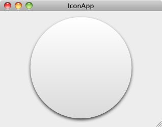
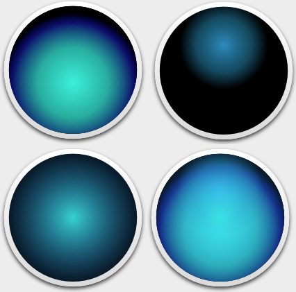

Please note: this article is part of the older "Objective-C era" on Cocoa with Love. I don't keep these articles up-to-date; please be wary of broken code or potentially out-of-date information. Read "A new era for Cocoa with Love" for more.
Advanced drawing using AppKit
In this post, I'll look at drawing a detailed image in code by combining multiple visual elements. Unlike previous posts I've done on drawing in Cocoa, this will focus on the AppKit classes. The code will use NSGraphicsContext, NSBezierPath, NSAffineTransform, NSGradient, NSGlyph and show you some simple ways to export the contents of an NSView to a file.
Introduction
I was reading an article on the Mac App Store and instead of paying attention to the article or working (which is what I was supposed to be doing at the time) I found myself staring at the accompanying image (a large version of the Mac App Store icon). Being the Cocoa programmer that I am, I found myself mentally deconstructing the icon and wondering how you'd draw something similar in Cocoa.
Only after I'd written the code and decided to write a post on it did I pay attention to the fact that I've already written a series of posts on creating icons. I'm not trying to be repetitive (this post is about Cocoa drawing techniques; it is not a suggested way to create application icons as the previous post was) but now that it's too late to change, I wish I had chosen a more novel visual subject for this post.
Update 2011-05-28: this post is a Mac application. If you'd like to see the same design drawn using iOS CoreGraphics code, check out this blog post by Marcus Crafter.
The sample app
You can download the complete sample project used in this post here IconApp.zip (96kB)
The application has a single window into which it draws an icon. You can resize the window and the icon always scales to fit. You can export the icon to a PDF or PNG file.
Obviously, while inspired by the Mac App Store icon, this design is not trying to accurately replicate it. The real purpose is to show how to achieve the multiple, layered gradients, curve drawing, path-based clipping, shadowing and scaling you're likely to need if you want to create a non-trivial design in code.
Scale-to-fit (respecting aspect ratio) and center
Even before we start drawing, we need to ensure that the image will always be scaled to fit the window. The first step is to find a scale that will fit the square icon into the view regardless of view size or aspect ratio:
NSSize nativeSize = [self nativeRect].size;
NSSize boundsSize = self.bounds.size;
CGFloat nativeAspect = nativeSize.width / nativeSize.height;
CGFloat boundsAspect = boundsSize.width / boundsSize.height;
CGFloat scale = nativeAspect > boundsAspect ?
boundsSize.width / nativeSize.width :
boundsSize.height / nativeSize.height;In this case, the nativeRect of the view is defined as NSMakeRect(0, 0, 512, 512);
Once we have the desired scale factor, we resize the current drawing context and center it:
NSAffineTransform *transform = [[NSAffineTransform alloc] init];
[transform
translateXBy:0.5 * (boundsSize.width - scale * nativeSize.width)
yBy:0.5 * (boundsSize.height - scale * nativeSize.height)];
[transform scaleBy:scale];
[transform set];Once we've applied this affine transform, we can draw as though our canvas is the nativeRect size but it will perform an aspect fit for any view size.
I haven't shown it here but if you change the current transform (or the current clipping path as I also do later) you should remember to place a call to [[NSGraphicsContext currentContext] saveGraphicsState] before your changes and follow your drawing by a call to [[NSGraphicsContext currentContext] restoreGraphicsState] to put everything back again.
Draw the background and shadow
We draw the background circle initially using a flat color, with an NSShadow enabled.
We use a flat color while drawing the shadow (instead of the gradient that we want in the final output) because the gradient drawing method we're going to use actually clips to the gradient's boundary, so the shadow wouldn't be drawn (because the shadow would be outside the clipping boundary).
Also, gradients don't anti-alias their edges. Drawing the shape with a flat color that is approximately the average color of the gradient will give us a nice, anti-aliased edge.
[NSShadow setShadowWithOffset:NSMakeSize(0, -8 * scale) blurRadius:12 * scale
color:[NSColor colorWithCalibratedWhite:0 alpha:0.75]];
[[NSColor colorWithCalibratedWhite:0.9 alpha:1.0] set];
[[NSBezierPath bezierPathWithOvalInRect:ellipseRect] fill];
[NSShadow clearShadow];Coding practice aside: If you're a good coder, you should avoid "magic numbers". Magic numbers are unnamed numbers used without explanation in the code. They are considered bad practice (instead, you should assign values to a constant that names the value and explains any derivation, then you may use it).
However, I normally make an exception for drawing code (as I have in this case). If a number is chosen purely for aesthetic purposes and has no real relationship to any other value, I leave it magic on the assumption that its aesthetic purpose (with derivation or geometric relationship) is obvious.
You do need to keep a tight reign on permissive number usage though. You'll notice lower down in this post (in the "Gloss Gradient" code), where there's a blend of calculated, derived and relationship-related values as well as purely aesthetic values, I've bothered to use named constants instead, to clarify what is derived, what is proportionate and which arc is which.
The shadow methods in the previous code block are convenience methods from a category implemented as follows:
@implementation NSShadow (SingleLineShadows)
+ (void)setShadowWithOffset:(NSSize)offset blurRadius:(CGFloat)radius
color:(NSColor *)shadowColor
{
NSShadow *aShadow = [[[self alloc] init] autorelease];
[aShadow setShadowOffset:offset];
[aShadow setShadowBlurRadius:radius];
[aShadow setShadowColor:shadowColor];
[aShadow set];
}
+ (void)clearShadow
{
NSShadow *aShadow = [[[self alloc] init] autorelease];
[aShadow set];
}
@endWe then draw the gradient over the top:
NSBezierPath *ellipse = [NSBezierPath bezierPathWithOvalInRect:ellipseRect];
NSGradient *borderGradient =
[[[NSGradient alloc]
initWithStartingColor:[NSColor colorWithCalibratedWhite:1.0 alpha:1.0]
endingColor:[NSColor colorWithCalibratedWhite:0.82 alpha:1.0]]
autorelease];
[borderGradient drawInBezierPath:ellipse angle:-90];Layered gradients to form the background
Single, simple gradients tend to look bland and artificial. Our eyes expect much more complex lighting than a single gradient normally provides.
For this gradient, I wanted a pear shape as though a circular gradient had been smudged upwards. NSGradient does have methods that allow the gradient to be drawn as a circle along a path but the aesthetic is harsher than the soft, blurry look I wanted.
The easiest way to get a natural, soft-lighting style gradient effect is simply to lay a few gradients on top of each other. By getting the alpha transparency of each gradient right, the gradients will all appear to be part of the same effect. Of course, this is also slow, particularly at high resolutions, so it is an approach to use sparingly.
The final result in the bottom right corner of this image is achieved by drawing a black background, then drawing the top-left, top-right and bottom-left gradients over the top of the black background.
Here's the code to paint the center of the circle black. We then set the clipping path of the context so that all further drawing will be clipped to inside the border of the circle.
NSRect ellipseCenterRect = NSInsetRect(ellipseRect, 16, 16);
[[NSColor blackColor] set];
NSBezierPath *ellipseCenter = [NSBezierPath bezierPathWithOvalInRect:ellipseCenterRect];
[ellipseCenter fill];
[ellipseCenter setClip];Now that the code is complete, I realize that I didn't need to clip here. I could have used the -[NSBezierPath drawInBezierPath:relativeCenterPosition:] method for the gradients to automatically draw them clipped to the .ellipseCenter path and they would have clipped themselves (nothing else would have needed clipping). Performance-wise, it doesn't really matter though (either I apply the clip or the method does).
Once the background is drawn, we begin layering the gradients. This is the code that draws the top-left of the gradients shown above:
NSGradient *bottomGlowGradient =
[[[NSGradient alloc]
initWithColorsAndLocations:
[NSColor colorWithCalibratedRed:0 green:0.94 blue:0.82 alpha:1.0], 0.0,
[NSColor colorWithCalibratedRed:0 green:0.62 blue:0.56 alpha:1.0], 0.35,
[NSColor colorWithCalibratedRed:0 green:0.05 blue:0.35 alpha:1.0], 0.6,
[NSColor colorWithCalibratedRed:0 green:0.0 blue:0.0 alpha:1.0], 0.7,
nil]
autorelease];
[bottomGlowGradient
drawInRect:ellipseCenterRect relativeCenterPosition:NSMakePoint(0, -0.2)];The floral heart adornment
The floral heart is a character from the Arial Unicode MS font. Getting the bezier path of a font character is a little cumbersome, since you need to use NSLayoutManager to get the glyph for you before you can ask NSBezierPath to create a path from the glyph.
NSString *floralHeart = @"\u2766";
NSRange stringRange = NSMakeRange(0, [floralHeart length]);
NSFont *arialUnicode =
[[NSFontManager sharedFontManager]
fontWithFamily:@"Arial Unicode MS"
traits:0
weight:5
size:345];
NSLayoutManager *layoutManager = [[[NSLayoutManager alloc] init] autorelease];
NSTextStorage *textStorage =
[[[NSTextStorage alloc] initWithString:floralHeart] autorelease];
[textStorage addAttribute:NSFontAttributeName value:arialUnicode range:stringRange];
[textStorage fixAttributesInRange:stringRange];
[textStorage addLayoutManager:layoutManager];
NSInteger numGlyphs = [layoutManager numberOfGlyphs];
NSGlyph *glyphs = (NSGlyph *)malloc(sizeof(NSGlyph) * (numGlyphs + 1)); // includes space for NULL terminator
[layoutManager getGlyphs:glyphs range:NSMakeRange(0, numGlyphs)];
[textStorage removeLayoutManager:layoutManager];
NSBezierPath *floralHeartPath = [[[NSBezierPath alloc] init] autorelease];
[floralHeartPath moveToPoint:NSMakePoint(130, 140)];
[floralHeartPath appendBezierPathWithGlyphs:glyphs count:numGlyphs inFont:arialUnicode];
free(glyphs);If there's an easier way to do this, I'd love to know. It certainly seems like you should just be able to ask for the path for a Unicode character directly.
The floral heart is then drawn using a gradient and shadow in almost the same way as the frame (we even use the same gradient).
Update: As Christopher Lloyd points out in the comments, you can get the NSGlyph more easily using the CTFont function CTFontGetGlyphsForCharacters. It saves 9 lines of code but it breaks my effort to do everything in this post using AppKit instead of the Core APIs:
// Replaces lines 1, 2, 9-18 of previous code block
NSInteger numGlyphs = 1; // hard-coded glyph count for floral heart character
NSGlyph *glyphs = (NSGlyph *)malloc(sizeof(NSGlyph) * (numGlyphs + 1)); // includes space for NULL terminator
CTFontGetGlyphsForCharacters(
(CTFontRef)arialUnicode, (const UniChar *)L"\u2766", (CGGlyph *)glyphs, numGlyphs);Gloss gradient
The icon is finished off with a gloss gradient. The gloss gradient is drawn between two arcs and it is these arcs that are the tricky part.
The gloss itself is inset from the frame to ensure that between the nearly white color of the frame and the gloss gradient, we still get a dark rim for contrast.
The left and right edges of the gloss start just above the middle of the circle (I chose 0.02π radians), following the arc of the circle at the top and through the middle of the image it bulges down to approximately the middle of the circle.
I got the trignometry for the top arc correct but I didn't really bother with the bottom bulging arc (since its exact placement doesn't really matter. Due to the nature of the 3 point arc drawing method I used for this bottom arc, if you get the radius wrong for the three point locations, the arc either straightens out near the left and right endpoints or the arc overshoots these points. I'm sure I could have done this better (a bézier curve might have been a smarter choice since a proper circle was not required for this curve).
const CGFloat glossInset = 8;
CGFloat glossRadius = (ellipseCenterRect.size.width * 0.5) - glossInset;
NSPoint center = NSMakePoint(NSMidX(ellipseRect), NSMidY(ellipseRect));
double arcFraction = 0.02;
NSPoint arcStartPoint = NSMakePoint(
center.x - glossRadius * cos(arcFraction * M_PI),
center.y + glossRadius * sin(arcFraction * M_PI));
NSPoint arcEndPoint = NSMakePoint(
center.x + glossRadius * cos(arcFraction * M_PI),
center.y + glossRadius * sin(arcFraction * M_PI));
NSBezierPath *glossPath = [[[NSBezierPath alloc] init] autorelease];
[glossPath moveToPoint:arcStartPoint];
[glossPath
appendBezierPathWithArcWithCenter:center
radius:glossRadius
startAngle:arcFraction * 180
endAngle:(1.0 - arcFraction) * 180];
const CGFloat bottomArcBulgeDistance = 70;
const CGFloat bottomArcRadius = 2.6;
[glossPath moveToPoint:arcEndPoint];
[glossPath
appendBezierPathWithArcFromPoint:
NSMakePoint(center.x, center.y - bottomArcBulgeDistance)
toPoint:arcStartPoint
radius:glossRadius * bottomArcRadius];
[glossPath lineToPoint:arcStartPoint];Exporting
Exporting a view to a PDF file is extremely simple in Cocoa:
[[iconView dataWithPDFInsideRect:[iconView nativeRect]]
writeToURL:[savePanel URL]
atomically:YES];However, you'll quickly see that gradients with transparency don't output correctly in Mac OS X (everything else, including the shadows, work fine). The internets claim it's a limitation of PDF 1.4 (the PDF standard used in Mac OS X).
Instead we need to export to PNG if we want to keep the transparency. There's a few different ways to do this but the quickest and easiest is:
NSRect iconViewFrame = iconView.frame;
[iconView setFrame:[iconView nativeRect]];
NSBitmapImageRep *bitmapImageRep =
[iconView bitmapImageRepForCachingDisplayInRect:[iconView frame]];
[iconView
cacheDisplayInRect:[iconView bounds]
toBitmapImageRep:bitmapImageRep];
[[bitmapImageRep representationUsingType:NSPNGFileType properties:nil]
writeToURL:[savePanel URL]
atomically:YES];
[iconView setFrame:iconViewFrame];This approach contains a few potential problems:
- we need to resize the view to render at the desired "native" resolution
- it caches the screen render so it may contain screen-related oddities (like your screen's color profile)
Ultimately, creating your own NSBitmapImageRep, setting the NSGraphicsContext using graphicsContextWithBitmapImageRep:, locking focus yourself and invoking drawRect: directly will avoid these issues and is more flexible. But it would have been more work so I didn't bother for this sample project (I mostly put this export code into the app so I could create the app's icon).
Conclusion
You can download the complete sample project used in this post here IconApp.zip (96kB)
Ultimately, it's uncommon to construct this many visual elements in code; these things are invariably easier in a drawing program and a prerendered bitmap would be faster (this is quite slow at large sizes).
However there are many situations where drawing in code can offer advantages — particularly if your designs need to reshape or adapt to fit content. Buttons and other controls containing text are a an example, particularly if your design cannot simply be stretched.
Even if the most complicated thing you need to do is anti-alias a path filled by a gradient, there are a few tricks contained in this post that I hope will help.
Submitting functionality for a future version of iOS